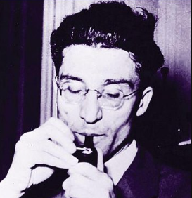
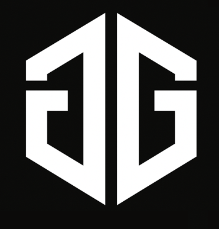
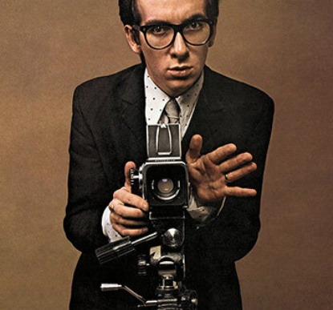
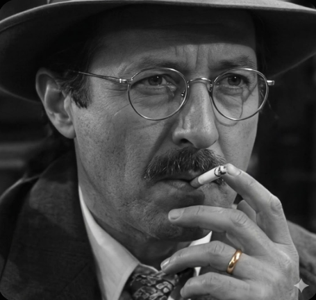

Bernardo Soares
"No soy nada. Nunca seré nada. No puedo querer ser nada. Aparte de eso, tengo en mí todos los sueños del mundo."
Los poetas, como los ciegos, pueden ver en la oscuridad.
"No soy nada. Nunca seré nada. No puedo querer ser nada. Aparte de eso, tengo en mí todos los sueños del mundo."
Los poetas, como los ciegos, pueden ver en la oscuridad.

“Vivir es ser otro.”


